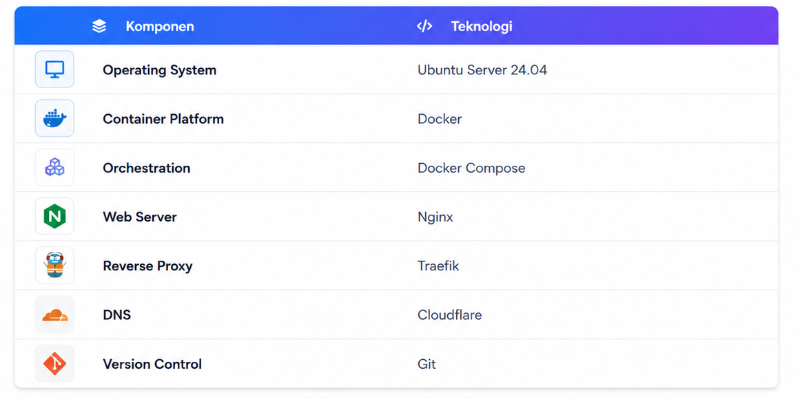
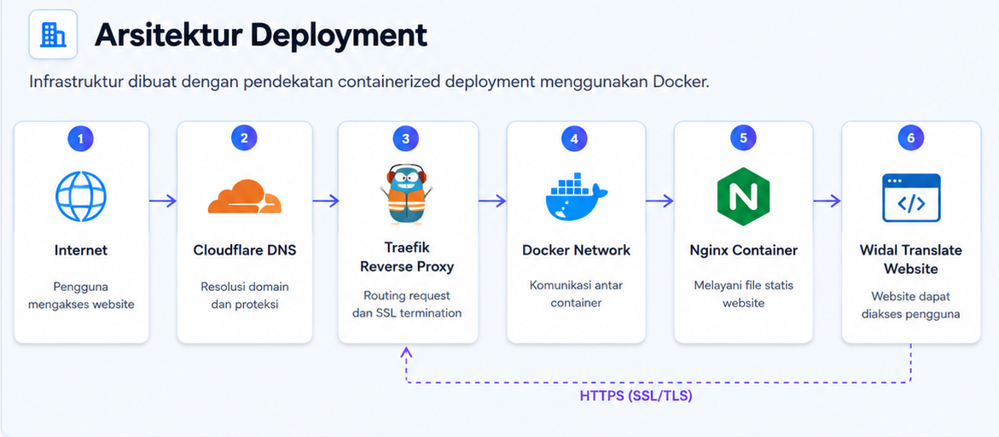

🎯 Tujuan Proyek
Latar Belakang
Deployment website secara manual sering kali membutuhkan proses konfigurasi berulang dan rawan kesalahan ketika memindahkan aplikasi ke server yang berbeda.
Selain itu, pengelolaan web server secara langsung membuat proses maintenance dan scaling menjadi lebih sulit dilakukan.
Tujuan
Membangun lingkungan deployment yang konsisten, portable, dan mudah dipindahkan menggunakan container Docker.
Target Implementasi
- Website dapat diakses melalui domain publik.
- Nginx berjalan di dalam Docker Container.
- Traefik menangani routing domain secara otomatis.
- Mendukung SSL Certificate HTTPS.
- Deployment dapat dilakukan hanya dengan Docker Compose.
⚙️ Teknologi yang Digunakan
Berikut adalah teknologi utama yang digunakan dalam proyek ini.

🚀 Fitur Utama
-
Containerized Deployment
Seluruh aplikasi dijalankan menggunakan Docker sehingga deployment lebih konsisten. -
Nginx Web Server
Menyediakan layanan web yang cepat dan ringan. -
Traefik Reverse Proxy
Routing domain dilakukan secara otomatis tanpa konfigurasi manual yang kompleks. -
HTTPS Automation
Mendukung SSL Certificate sehingga website dapat diakses secara aman. -
Portable Infrastructure
Deployment dapat dipindahkan ke server lain hanya dengan menjalankan Docker Compose.
🏗️ Arsitektur Deployment
Infrastruktur dibuat menggunakan pendekatan containerized deployment sehingga mudah dipelihara, aman, dan dapat dipindahkan ke server lain.

⚙️ Tahapan Implementasi
- Clone repository di server
-
Konfigurasi file docker-compose.yml
~/deploy# nano docker-compose.yml
services: web: image: nginx:alpine container_name: widal-website volumes: - ./:/usr/share/nginx/html - ./nginx.conf:/etc/nginx/conf.d/default.conf - "traefik.enable=true" - "traefik.http.routers.static.rule=Host(`widal.crevo.my.id`)" - "traefik.http.services.static.loadbalancer.server.port=80" networks: - web networks: web: labels: external: true -
Konfigurasi file nginx.conf
~/deploy# nano nginx.conf
server { listen 80; server_name _; root /usr/share/nginx/html; index index.html; location / { try_files $uri $uri/ /index.html; } } -
Jalankan docker Compose
~/deploy# doker compose up -d --build
- Konfigurasi subdomain pada cloudflare
- Mengkonfigurasi DNS melalui Cloudflare.
- Melakukan pengujian domain dan HTTPS.
- Monitoring container menggunakan Docker CLI.
~/deploy# git clone https://git.crevo.my.id/zozon/WidalWeb.git
🛠️ Tantangan & Solusi
Tantangan #1
Container tidak dapat diakses menggunakan domain publik karena konfigurasi routing belum sesuai.
Solusi
Memperbaiki konfigurasi label Traefik dan Docker Network sehingga reverse proxy dapat mengenali service dengan benar.
Tantangan #2
SSL Certificate tidak terbentuk otomatis.
Solusi
Memastikan DNS Cloudflare telah mengarah ke server dan port 80 serta 443 dapat diakses dari internet.
📈 Hasil Akhir
Website berhasil di-deploy menggunakan Docker Container dan dapat diakses melalui domain publik dengan HTTPS aktif.
- Deployment lebih cepat dan konsisten.
- Konfigurasi lebih mudah dipelihara.
- Portable ke server lain.
- Lingkungan terisolasi menggunakan container.
- Mendukung deployment ulang hanya dengan satu perintah.